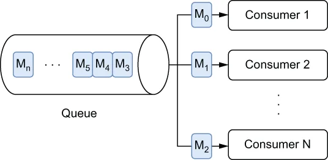

我的总结🤖：基于队列的消息消费模型中，消息按 FIFO 顺序投递，但每条消息只会被一个消费者接收并处理（多个消费者之间是竞争关系），消费者处理成功后需
ack确认才会移除消息；消费者故障时消息会被重投给另一个消费者，因此队列适合“每条消息恰好处理一次、但顺序不重要”的工作队列场景，并可通过增加消费者来应对积压。
Queues, on the other hand, provide first in, first out (FIFO) message delivery semantics to one or more competing consumers, as shown in figure 1.4. With queues, the messages are delivered in the order they are received, and only one message consumer receives and processes an individual message, rather than all of them. These are perfect for queuing up messages that represent events that trigger some work to be performed, such as orders into a fulfillment center for dispatch. In this scenario, you want each order processed just once.
另一方面，队列向一个或多个相互竞争的消费者提供先进先出（FIFO）的消息投递语义，如图 1.4 所示。使用队列时，消息按照它们被接收的顺序投递，并且每条消息只有一个消费者会接收并处理它，而不是所有消费者。队列非常适合用来排队那些代表"触发某项工作待执行"的事件消息，例如发往履约中心等待发货的订单。在这种场景下，你希望每个订单只被处理一次。
Message queues can easily support higher rates of consumption by scaling up the number of consumers in the event of a high number of backlogged messages. To ensure that a message is processed exactly once, each message must be removed from the queue after it has been successfully processed and acknowledged by the consumer. Due to its exactly-once processing guarantees, message queuing is ideal for work queue use cases.
当积压消息数量较多时，消息队列可以通过增加消费者数量轻松支撑更高的消费速率。为确保一条消息恰好被处理一次，每条消息在消费者成功处理并确认之后，必须从队列中移除。凭借恰好一次的处理保证，消息队列非常适用于工作队列类的用例。

\Figure 1.4 With queue-based message consumption, each message is delivered to exactly one consumer. In this case, message M0 was consumed by consumer 1, M1 by consumer 2, etc.
图 1.4 采用基于队列的消息消费时，每条消息只会被投递给一个消费者。在本例中，消息 M0 被消费者 1 消费，M1 被消费者 2 消费，以此类推。
In the event of consumer failures (meaning no acknowledgment is received within a specified timeframe), the message will be resent to another consumer. In such a scenario, the message will most likely be processed out of order. Therefore, message queues are well suited for use cases where it is critical that each message is processed exactly once, but the order in which the messages are processed is not important.
一旦发生消费者故障（即在规定时间内没有收到确认），该消息会被重新发送给另一个消费者。在这种情况下，消息很可能会被乱序处理。因此，消息队列非常适合这样一类用例：每条消息恰好被处理一次是至关重要的，但消息被处理的先后顺序并不重要。